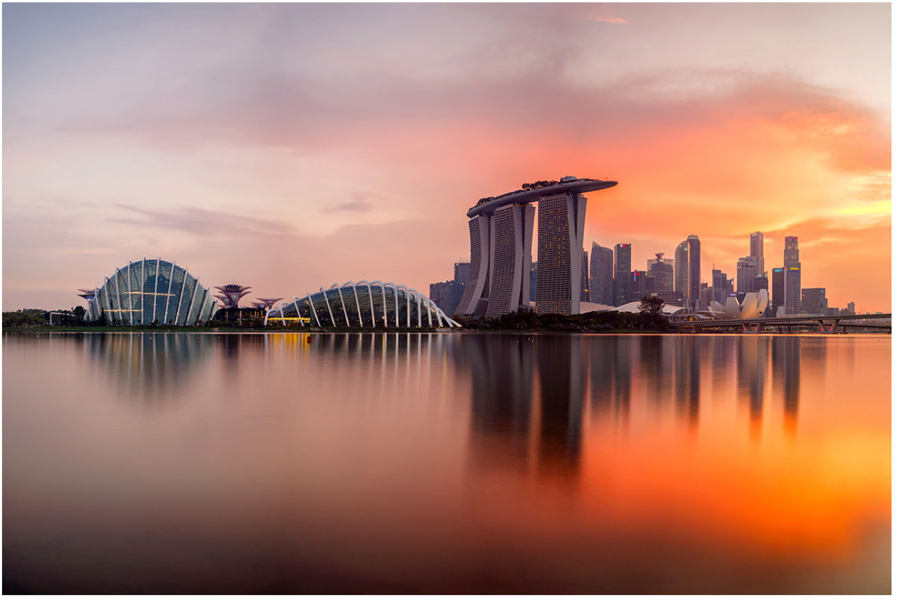
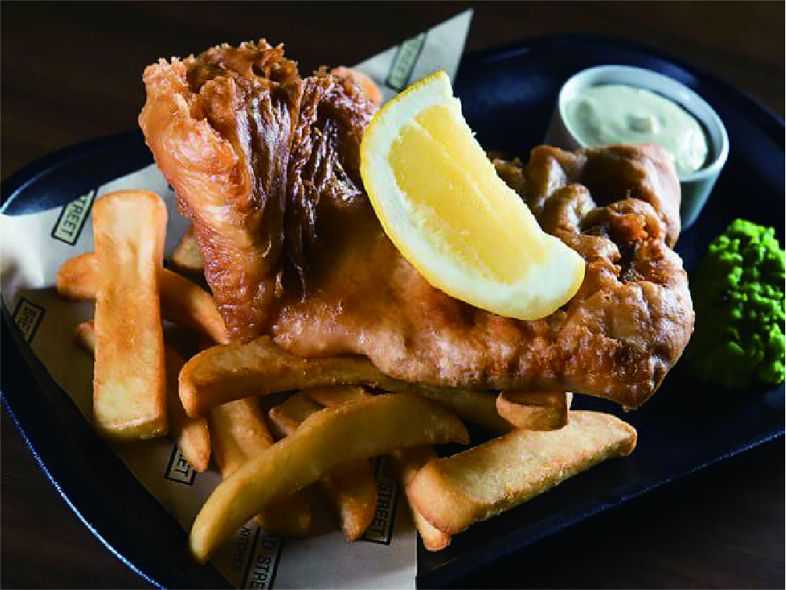

이번 여행 키워드
01 따뜻한
02 휴식
03 나만의 공간
5월을 왜 싱가포르로 결정 하셨나요?

따뜻한 공기와 깨끗한 거리
싱가포르는 동남아시아에 위치하고 있으며 365일 따뜻함을 유지하고 있습니다.
5월
최고의
호텔 정보
이달의 베스트 호텔을 확인 할 수 있습니다.
본 내용은 호텔의 정보를 짧고 정확하게 전달하며
기존에 호텔에서 제공하는 내용과 같은 정보와
사이트에서 제공하는 정보가 함께 있으며 회원님들이
호텔을 이용하는 동안에 효율적인 이용 방법을 제공하여
보다 만족스러운 여행을 제공하고자 합니다.
IN THE VICINITY of HOTEL
호텔 주변에 가장 인기있는 맛집
BLACK TAP CRAFT BURGERS & BEER
뉴욕 레스토랑의 첫 번째 아시아 지점에서 두툼한
고메 햄버거, 풍성하게 쌓아 올린 밀크셰이크,
생맥주와 칵테일을 맘껏 맛보세요.
Black Tap(블랙 탭)은 근사하면서 여유로운 옛
정취를 지닌 미국 식당의 분위기를 고스란히
되살리고 있습니다.
다양한 종류의 수제 햄버거를 메뉴로 선보입니다.

Din Tai Fung(딘타이펑)
The New York Times 선정 세계 10대 레스토랑
중 하나로 선정된 레스토랑에서 세계적 명성의
돼지고기 덤플링을 맛보세요.
이 대만 레스토랑은 또한 새우와 달걀을 넣은
볶음밥(Fried Rice with Shrimp and Eggs),
찐 닭고기 수프(Steamed Chicken Soup),
등 유명 요리를 선보입니다.

고든 램지의 Bread Street Kitchen
워터프론트를 바라보는 활기찬 공간에서
피시 앤 칩스(Fish & Chips), 비프 웰링턴
(Beef Wellington), 스코치 에그(Scotch Egg),
클래식 로스트와 같은 영국식 전통 요리를 편안
하게 즐겨보세요.
빈티지하면서 모던한 감각이 결합된 이곳의
분위기는 숨겨진 스피커에서 나오는
음악으로 더욱 고조됩니다.